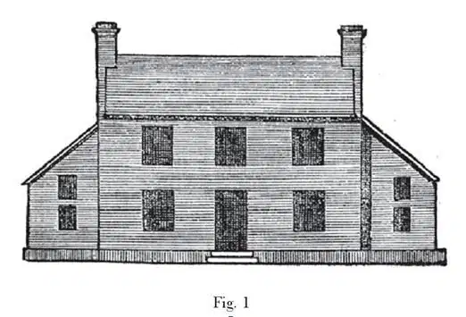

This passage in the lecture was illustrated by an enlargement of the woodcut, Fig. 1; but I did not choose to disfigure the middle of this book with it. It is copied from the 49th plate of the third edition of the "Encyclopaedia Britannica" (Edinburgh, 1797), and represents an English farmhouse arranged on classical principles. If the reader cares to consult the work itself, he will find in the same plate another composition of similar propriety, and dignified by the addition of a pediment, beneath the shadow of which "a private gentleman who has a small family may find conveniency." [Fig.1]

图1 的木建筑是木刻的放大版，用以解释演讲中的这一段。但是，我并非想用它打乱这本书当中的内容。这幅图来自《大英百科全书》第三版（爱丁堡，1797）插图49，描绘的是一座遵循古典规则搭建的英国农舍。假如读者查阅原图，就会发现同一图版中还有一座类似的房屋建筑组合图，多了一座山墙，在它的遮蔽下，“幽居的绅士带着他的小家庭可以享受随意的生活”，因而多了几分尊贵的气势。